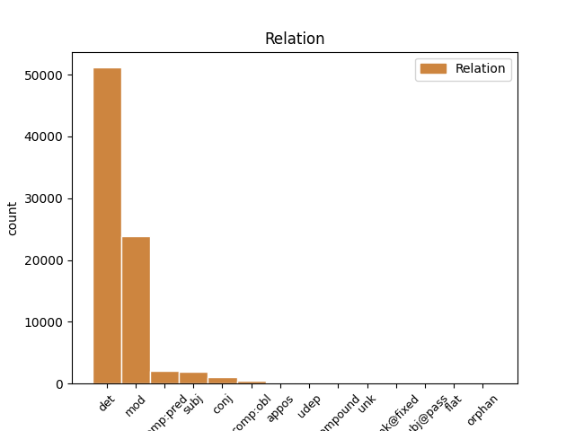
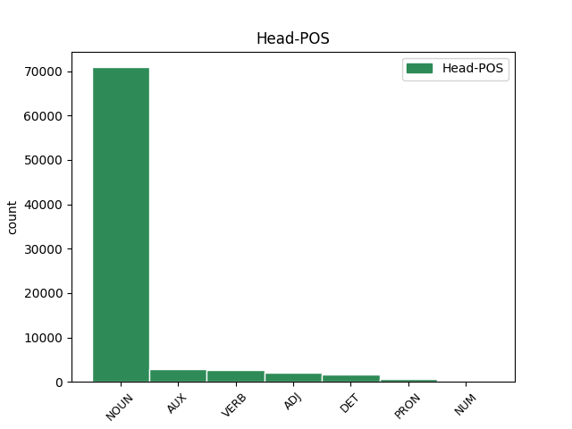
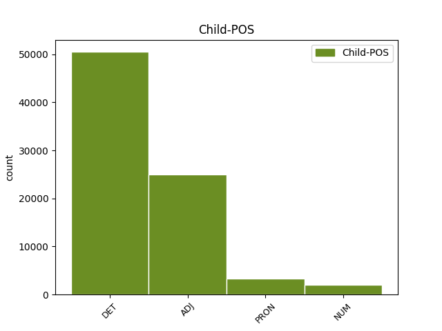

Distribution of features within this leaf



Agreement Rules sorted by frequency.
- When the dependent token is the determiner(det) of the head token, and the dependent token is DET.
1 Él _ _ _ _ 0 _ _ _
2 llega _ _ _ _ 0 _ _ _
3 a _ _ _ _ 0 _ _ _
4 tirar _ _ _ _ 0 _ _ _
5 la _ _ _ _ 0 _ _ _
6 sobre _ _ _ _ 0 _ _ _
7 la _ _ _ _ 0 _ _ _
8 cama _ _ _ _ 0 _ _ _
9 y _ _ _ _ 0 _ _ _
10 le _ _ _ _ 0 _ _ _
11 toca _ _ _ _ 0 _ _ _
12 la _ _ _ _ 0 _ _ _
13 cara _ _ _ _ 0 _ _ _
14 con _ _ _ _ 0 _ _ _
15 la el DET DET Definite=Def|Gender=Fem|Number=Sing|PronType=Art 16 det _ _
16 mano mano NOUN NOUN Gender=Fem|Number=Sing 0 _ _ _
17 . _ _ _ _ 0 _ _ _
1 Conviene _ _ _ _ 0 _ _ _
2 que _ _ _ _ 0 _ _ _
3 ahora _ _ _ _ 0 _ _ _
4 , _ _ _ _ 0 _ _ _
5 en _ _ _ _ 0 _ _ _
6 plena _ _ _ _ 0 _ _ _
7 apoteosis _ _ _ _ 0 _ _ _
8 de _ _ _ _ 0 _ _ _
9 pre-presidencia _ _ _ _ 0 _ _ _
10 ( _ _ _ _ 0 _ _ _
11 presidiremos _ _ _ _ 0 _ _ _
12 la _ _ _ _ 0 _ _ _
13 Unión _ _ _ _ 0 _ _ _
14 Europea _ _ _ _ 0 _ _ _
15 dentro _ _ _ _ 0 _ _ _
16 de _ _ _ _ 0 _ _ _
17 unos _ _ _ _ 0 _ _ _
18 meses _ _ _ _ 0 _ _ _
19 : _ _ _ _ 0 _ _ _
20 rogativas _ _ _ _ 0 _ _ _
21 y _ _ _ _ 0 _ _ _
22 festejos _ _ _ _ 0 _ _ _
23 son _ _ _ _ 0 _ _ _
24 de _ _ _ _ 0 _ _ _
25 rigor _ _ _ _ 0 _ _ _
26 ) _ _ _ _ 0 _ _ _
27 reflexionemos _ _ _ _ 0 _ _ _
28 críticamente _ _ _ _ 0 _ _ _
29 y _ _ _ _ 0 _ _ _
30 nos _ _ _ _ 0 _ _ _
31 hagamos _ _ _ _ 0 _ _ _
32 un _ _ _ _ 0 _ _ _
33 lifting lifting NOUN NOUN Gender=Masc|Number=Sing 0 _ _ _
34 metodológico metodológico ADJ ADJ Gender=Masc|Number=Sing 33 mod _ SpaceAfter=No
35 . _ _ _ _ 0 _ _ _
1 El _ _ _ _ 0 _ _ _
2 mundo _ _ _ _ 0 _ _ _
3 ya _ _ _ _ 0 _ _ _
4 no _ _ _ _ 0 _ _ _
5 es ser AUX AUX Mood=Ind|Number=Sing|Person=3|Tense=Pres|VerbForm=Fin 0 _ _ _
6 ajeno ajeno ADJ ADJ Gender=Masc|Number=Sing 5 comp:pred _ _
7 aunque _ _ _ _ 0 _ _ _
8 sigue _ _ _ _ 0 _ _ _
9 siendo _ _ _ _ 0 _ _ _
10 ancho _ _ _ _ 0 _ _ _
11 . _ _ _ _ 0 _ _ _
1 Van _ _ _ _ 0 _ _ _
2 a _ _ _ _ 0 _ _ _
3 por _ _ _ _ 0 _ _ _
4 todas _ _ _ _ 0 _ _ _
5 : _ _ _ _ 0 _ _ _
6 un _ _ _ _ 0 _ _ _
7 día _ _ _ _ 0 _ _ _
8 el _ _ _ _ 0 _ _ _
9 ministro _ _ _ _ 0 _ _ _
10 del _ _ _ _ 0 _ _ _
11 ramo _ _ _ _ 0 _ _ _
12 , _ _ _ _ 0 _ _ _
13 Josep _ _ _ _ 0 _ _ _
14 Piqué _ _ _ _ 0 _ _ _
15 , _ _ _ _ 0 _ _ _
16 saluda _ _ _ _ 0 _ _ _
17 los _ _ _ _ 0 _ _ _
18 esfuerzos _ _ _ _ 0 _ _ _
19 del _ _ _ _ 0 _ _ _
20 Gobierno _ _ _ _ 0 _ _ _
21 argelino _ _ _ _ 0 _ _ _
22 en _ _ _ _ 0 _ _ _
23 el _ _ _ _ 0 _ _ _
24 respeto _ _ _ _ 0 _ _ _
25 a _ _ _ _ 0 _ _ _
26 los _ _ _ _ 0 _ _ _
27 derechos _ _ _ _ 0 _ _ _
28 humanos _ _ _ _ 0 _ _ _
29 y _ _ _ _ 0 _ _ _
30 la _ _ _ _ 0 _ _ _
31 democracia _ _ _ _ 0 _ _ _
32 : _ _ _ _ 0 _ _ _
33 lo _ _ _ _ 0 _ _ _
34 hace _ _ _ _ 0 _ _ _
35 oportunamente _ _ _ _ 0 _ _ _
36 , _ _ _ _ 0 _ _ _
37 cuando _ _ _ _ 0 _ _ _
38 tres tres NUM NUM Number=Plur|NumType=Card 39 mod _ _
39 días día NOUN NOUN Gender=Masc|Number=Plur 0 _ _ _
40 antes _ _ _ _ 0 _ _ _
41 el _ _ _ _ 0 _ _ _
42 Ejército _ _ _ _ 0 _ _ _
43 argelino _ _ _ _ 0 _ _ _
44 ha _ _ _ _ 0 _ _ _
45 disparado _ _ _ _ 0 _ _ _
46 contra _ _ _ _ 0 _ _ _
47 una _ _ _ _ 0 _ _ _
48 manifestación _ _ _ _ 0 _ _ _
49 en _ _ _ _ 0 _ _ _
50 Tizi _ _ _ _ 0 _ _ _
51 Uzú _ _ _ _ 0 _ _ _
52 y _ _ _ _ 0 _ _ _
53 deja _ _ _ _ 0 _ _ _
54 un _ _ _ _ 0 _ _ _
55 balance _ _ _ _ 0 _ _ _
56 de _ _ _ _ 0 _ _ _
57 un _ _ _ _ 0 _ _ _
58 centenar _ _ _ _ 0 _ _ _
59 de _ _ _ _ 0 _ _ _
60 víctimas _ _ _ _ 0 _ _ _
61 mortales _ _ _ _ 0 _ _ _
62 . _ _ _ _ 0 _ _ _
1 Él él PRON PRON Case=Acc,Nom|Gender=Masc|Number=Sing|Person=3|PronType=Prs 2 subj _ _
2 llega llegar VERB AUX Mood=Ind|Number=Sing|Person=3|Tense=Pres|VerbForm=Fin 0 _ _ _
3 a _ _ _ _ 0 _ _ _
4 tirar _ _ _ _ 0 _ _ _
5 la _ _ _ _ 0 _ _ _
6 sobre _ _ _ _ 0 _ _ _
7 la _ _ _ _ 0 _ _ _
8 cama _ _ _ _ 0 _ _ _
9 y _ _ _ _ 0 _ _ _
10 le _ _ _ _ 0 _ _ _
11 toca _ _ _ _ 0 _ _ _
12 la _ _ _ _ 0 _ _ _
13 cara _ _ _ _ 0 _ _ _
14 con _ _ _ _ 0 _ _ _
15 la _ _ _ _ 0 _ _ _
16 mano _ _ _ _ 0 _ _ _
17 . _ _ _ _ 0 _ _ _
1 Todo _ _ _ _ 0 _ _ _
2 recuerda _ _ _ _ 0 _ _ _
3 aquel _ _ _ _ 0 _ _ _
4 histórico _ _ _ _ 0 _ _ _
5 intercambio _ _ _ _ 0 _ _ _
6 de _ _ _ _ 0 _ _ _
7 corbatas _ _ _ _ 0 _ _ _
8 con _ _ _ _ 0 _ _ _
9 el _ _ _ _ 0 _ _ _
10 dinosaurio _ _ _ _ 0 _ _ _
11 cubano _ _ _ _ 0 _ _ _
12 con _ _ _ _ 0 _ _ _
13 resultados _ _ _ _ 0 _ _ _
14 tan _ _ _ _ 0 _ _ _
15 brillantes brillante ADJ ADJ Number=Plur 0 _ _ _
16 y _ _ _ _ 0 _ _ _
17 espectaculares espectacular ADJ ADJ Number=Plur 15 conj _ SpaceAfter=No
18 : _ _ _ _ 0 _ _ _
19 yo _ _ _ _ 0 _ _ _
20 muevo _ _ _ _ 0 _ _ _
21 ficha _ _ _ _ 0 _ _ _
22 si _ _ _ _ 0 _ _ _
23 tú _ _ _ _ 0 _ _ _
24 mueves _ _ _ _ 0 _ _ _
25 ficha _ _ _ _ 0 _ _ _
26 . _ _ _ _ 0 _ _ _
1 En _ _ _ _ 0 _ _ _
2 el _ _ _ _ 0 _ _ _
3 primer _ _ _ _ 0 _ _ _
4 trimestre _ _ _ _ 0 _ _ _
5 de _ _ _ _ 0 _ _ _
6 1999 _ _ _ _ 0 _ _ _
7 , _ _ _ _ 0 _ _ _
8 las _ _ _ _ 0 _ _ _
9 reservas _ _ _ _ 0 _ _ _
10 de _ _ _ _ 0 _ _ _
11 divisas _ _ _ _ 0 _ _ _
12 disminuyeron _ _ _ _ 0 _ _ _
13 en _ _ _ _ 0 _ _ _
14 1,67 _ _ _ _ 0 _ _ _
15 billones _ _ _ _ 0 _ _ _
16 , _ _ _ _ 0 _ _ _
17 incluyendo _ _ _ _ 0 _ _ _
18 la _ _ _ _ 0 _ _ _
19 transferencia _ _ _ _ 0 _ _ _
20 de _ _ _ _ 0 _ _ _
21 reservas _ _ _ _ 0 _ _ _
22 al _ _ _ _ 0 _ _ _
23 Banco _ _ _ _ 0 _ _ _
24 Central _ _ _ _ 0 _ _ _
25 Europeo _ _ _ _ 0 _ _ _
26 ( _ _ _ _ 0 _ _ _
27 BCE _ _ _ _ 0 _ _ _
28 ) _ _ _ _ 0 _ _ _
29 , _ _ _ _ 0 _ _ _
30 por _ _ _ _ 0 _ _ _
31 lo él PRON DET Case=Acc|Definite=Def|Gender=Masc|Number=Sing|Person=3|PrepCase=Npr|PronType=Prs 39 det _ _
32 que _ _ _ _ 0 _ _ _
33 su _ _ _ _ 0 _ _ _
34 valor _ _ _ _ 0 _ _ _
35 a _ _ _ _ 0 _ _ _
36 final _ _ _ _ 0 _ _ _
37 de _ _ _ _ 0 _ _ _
38 marzo _ _ _ _ 0 _ _ _
39 ascendía ascender VERB VERB Mood=Ind|Number=Sing|Person=3|Tense=Imp|VerbForm=Fin 0 _ _ _
40 a _ _ _ _ 0 _ _ _
41 7,6 _ _ _ _ 0 _ _ _
42 billones _ _ _ _ 0 _ _ _
43 de _ _ _ _ 0 _ _ _
44 pesetas _ _ _ _ 0 _ _ _
45 . _ _ _ _ 0 _ _ _
1 Y _ _ _ _ 0 _ _ _
2 encima _ _ _ _ 0 _ _ _
3 voy _ _ _ _ 0 _ _ _
4 y _ _ _ _ 0 _ _ _
5 me yo PRON PRON Case=Acc,Dat|Number=Sing|Person=1|PrepCase=Npr|PronType=Prs|Reflex=Yes 6 comp:obl _ _
6 entero enterar VERB VERB Mood=Ind|Number=Sing|Person=1|Tense=Pres|VerbForm=Fin 0 _ _ _
7 de _ _ _ _ 0 _ _ _
8 que _ _ _ _ 0 _ _ _
9 es _ _ _ _ 0 _ _ _
10 barato _ _ _ _ 0 _ _ _
11 . _ _ _ _ 0 _ _ _
1 se _ _ _ _ 0 _ _ _
2 enteró _ _ _ _ 0 _ _ _
3 su _ _ _ _ 0 _ _ _
4 rival _ _ _ _ 0 _ _ _
5 , _ _ _ _ 0 _ _ _
6 el _ _ _ _ 0 _ _ _
7 checo _ _ _ _ 0 _ _ _
8 Daniel _ _ _ _ 0 _ _ _
9 Vacek _ _ _ _ 0 _ _ _
10 , _ _ _ _ 0 _ _ _
11 todos _ _ _ _ 0 _ _ _
12 los _ _ _ _ 0 _ _ _
13 espectadores _ _ _ _ 0 _ _ _
14 de _ _ _ _ 0 _ _ _
15 la _ _ _ _ 0 _ _ _
16 pista _ _ _ _ 0 _ _ _
17 siete _ _ _ _ 0 _ _ _
18 , _ _ _ _ 0 _ _ _
19 y _ _ _ _ 0 _ _ _
20 , _ _ _ _ 0 _ _ _
21 dado _ _ _ _ 0 _ _ _
22 el _ _ _ _ 0 _ _ _
23 volumen _ _ _ _ 0 _ _ _
24 de _ _ _ _ 0 _ _ _
25 su _ _ _ _ 0 _ _ _
26 lamento _ _ _ _ 0 _ _ _
27 , _ _ _ _ 0 _ _ _
28 se _ _ _ _ 0 _ _ _
29 diría _ _ _ _ 0 _ _ _
30 que _ _ _ _ 0 _ _ _
31 se _ _ _ _ 0 _ _ _
32 percataron _ _ _ _ 0 _ _ _
33 hasta _ _ _ _ 0 _ _ _
34 aquellos aquel PRON PRON Gender=Masc|Number=Plur|PronType=Dem 36 mod _ _
35 que _ _ _ _ 0 _ _ _
36 degustaban degustar VERB VERB Mood=Ind|Number=Plur|Person=3|Tense=Imp|VerbForm=Fin 0 _ _ _
37 por _ _ _ _ 0 _ _ _
38 900 _ _ _ _ 0 _ _ _
39 pesetas _ _ _ _ 0 _ _ _
40 una _ _ _ _ 0 _ _ _
41 hamburguesa _ _ _ _ 0 _ _ _
42 en _ _ _ _ 0 _ _ _
43 una _ _ _ _ 0 _ _ _
44 área _ _ _ _ 0 _ _ _
45 de _ _ _ _ 0 _ _ _
46 reposo _ _ _ _ 0 _ _ _
47 no _ _ _ _ 0 _ _ _
48 muy _ _ _ _ 0 _ _ _
49 cercana _ _ _ _ 0 _ _ _
50 . _ _ _ _ 0 _ _ _
1 Después _ _ _ _ 0 _ _ _
2 la _ _ _ _ 0 _ _ _
3 propia _ _ _ _ 0 _ _ _
4 competencia _ _ _ _ 0 _ _ _
5 y _ _ _ _ 0 _ _ _
6 la _ _ _ _ 0 _ _ _
7 ley _ _ _ _ 0 _ _ _
8 de _ _ _ _ 0 _ _ _
9 mercado _ _ _ _ 0 _ _ _
10 acabará _ _ _ _ 0 _ _ _
11 derivando _ _ _ _ 0 _ _ _
12 en _ _ _ _ 0 _ _ _
13 una _ _ _ _ 0 _ _ _
14 rebaja _ _ _ _ 0 _ _ _
15 de _ _ _ _ 0 _ _ _
16 los _ _ _ _ 0 _ _ _
17 precios _ _ _ _ 0 _ _ _
18 o _ _ _ _ 0 _ _ _
19 en _ _ _ _ 0 _ _ _
20 un _ _ _ _ 0 _ _ _
21 sistema _ _ _ _ 0 _ _ _
22 más _ _ _ _ 0 _ _ _
23 justo _ _ _ _ 0 _ _ _
24 para _ _ _ _ 0 _ _ _
25 que _ _ _ _ 0 _ _ _
26 no _ _ _ _ 0 _ _ _
27 paguen pagar VERB VERB Mood=Sub|Number=Plur|Person=3|Tense=Pres|VerbForm=Fin 0 _ _ _
28 justos justo ADJ ADJ Gender=Masc|Number=Plur 27 subj _ _
29 por _ _ _ _ 0 _ _ _
30 pecadores _ _ _ _ 0 _ _ _
31 . _ _ _ _ 0 _ _ _
1 El _ _ _ _ 0 _ _ _
2 mismo _ _ _ _ 0 _ _ _
3 latón _ _ _ _ 0 _ _ _
4 que _ _ _ _ 0 _ _ _
5 se _ _ _ _ 0 _ _ _
6 utiliza _ _ _ _ 0 _ _ _
7 para _ _ _ _ 0 _ _ _
8 fabricar _ _ _ _ 0 _ _ _
9 las _ _ _ _ 0 _ _ _
10 monedas _ _ _ _ 0 _ _ _
11 de _ _ _ _ 0 _ _ _
12 peseta _ _ _ _ 0 _ _ _
13 o _ _ _ _ 0 _ _ _
14 de _ _ _ _ 0 _ _ _
15 duro _ _ _ _ 0 _ _ _
16 , _ _ _ _ 0 _ _ _
17 y _ _ _ _ 0 _ _ _
18 que _ _ _ _ 0 _ _ _
19 ahora _ _ _ _ 0 _ _ _
20 se _ _ _ _ 0 _ _ _
21 usará _ _ _ _ 0 _ _ _
22 también _ _ _ _ 0 _ _ _
23 con _ _ _ _ 0 _ _ _
24 el _ _ _ _ 0 _ _ _
25 euro _ _ _ _ 0 _ _ _
26 , _ _ _ _ 0 _ _ _
27 con _ _ _ _ 0 _ _ _
28 una _ _ _ _ 0 _ _ _
29 aleación _ _ _ _ 0 _ _ _
30 que _ _ _ _ 0 _ _ _
31 es ser AUX AUX Mood=Ind|Number=Sing|Person=3|Tense=Pres|VerbForm=Fin 0 _ _ _
32 uno uno PRON PRON Gender=Masc|Number=Sing|PronType=Ind 31 comp:pred _ _
33 de _ _ _ _ 0 _ _ _
34 los _ _ _ _ 0 _ _ _
35 secretos _ _ _ _ 0 _ _ _
36 mejor _ _ _ _ 0 _ _ _
37 guardados _ _ _ _ 0 _ _ _
38 por _ _ _ _ 0 _ _ _
39 el _ _ _ _ 0 _ _ _
40 Tesoro _ _ _ _ 0 _ _ _
41 . _ _ _ _ 0 _ _ _
1 Varios _ _ _ _ 0 _ _ _
2 miles mil NUM NUM Number=Plur|NumType=Card 6 subj _ _
3 de _ _ _ _ 0 _ _ _
4 personas _ _ _ _ 0 _ _ _
5 se _ _ _ _ 0 _ _ _
6 acercaron acercar VERB VERB Mood=Ind|Number=Plur|Person=3|Tense=Past|VerbForm=Fin 0 _ _ _
7 ayer _ _ _ _ 0 _ _ _
8 al _ _ _ _ 0 _ _ _
9 Moll _ _ _ _ 0 _ _ _
10 de _ _ _ _ 0 _ _ _
11 Marina _ _ _ _ 0 _ _ _
12 , _ _ _ _ 0 _ _ _
13 atraídas _ _ _ _ 0 _ _ _
14 por _ _ _ _ 0 _ _ _
15 la _ _ _ _ 0 _ _ _
16 curiosidad _ _ _ _ 0 _ _ _
17 de _ _ _ _ 0 _ _ _
18 presenciar _ _ _ _ 0 _ _ _
19 una _ _ _ _ 0 _ _ _
20 iniciativa _ _ _ _ 0 _ _ _
21 inédita _ _ _ _ 0 _ _ _
22 en _ _ _ _ 0 _ _ _
23 la _ _ _ _ 0 _ _ _
24 ciudad _ _ _ _ 0 _ _ _
25 , _ _ _ _ 0 _ _ _
26 aunque _ _ _ _ 0 _ _ _
27 sólo _ _ _ _ 0 _ _ _
28 unas _ _ _ _ 0 _ _ _
29 200 _ _ _ _ 0 _ _ _
30 personas _ _ _ _ 0 _ _ _
31 se _ _ _ _ 0 _ _ _
32 atrevieron _ _ _ _ 0 _ _ _
33 a _ _ _ _ 0 _ _ _
34 intentar _ _ _ _ 0 _ _ _
35 conseguir _ _ _ _ 0 _ _ _
36 el _ _ _ _ 0 _ _ _
37 hoyo _ _ _ _ 0 _ _ _
38 de _ _ _ _ 0 _ _ _
39 un _ _ _ _ 0 _ _ _
40 golpe _ _ _ _ 0 _ _ _
41 . _ _ _ _ 0 _ _ _
1 También _ _ _ _ 0 _ _ _
2 el _ _ _ _ 0 _ _ _
3 pleno _ _ _ _ 0 _ _ _
4 de _ _ _ _ 0 _ _ _
5 L'Hospitalet _ _ _ _ 0 _ _ _
6 tiene tener VERB VERB Mood=Ind|Number=Sing|Person=3|Tense=Pres|VerbForm=Fin 0 _ _ _
7 previsto previsto ADJ ADJ Gender=Masc|Number=Sing|VerbForm=Part 6 comp:obl _ _
8 recibir _ _ _ _ 0 _ _ _
9 en _ _ _ _ 0 _ _ _
10 su _ _ _ _ 0 _ _ _
11 sesión _ _ _ _ 0 _ _ _
12 de _ _ _ _ 0 _ _ _
13 mañana _ _ _ _ 0 _ _ _
14 a _ _ _ _ 0 _ _ _
15 la _ _ _ _ 0 _ _ _
16 Federación _ _ _ _ 0 _ _ _
17 de _ _ _ _ 0 _ _ _
18 Asociaciones _ _ _ _ 0 _ _ _
19 de _ _ _ _ 0 _ _ _
20 Vecinos _ _ _ _ 0 _ _ _
21 , _ _ _ _ 0 _ _ _
22 que _ _ _ _ 0 _ _ _
23 también _ _ _ _ 0 _ _ _
24 reclama _ _ _ _ 0 _ _ _
25 la _ _ _ _ 0 _ _ _
26 retirada _ _ _ _ 0 _ _ _
27 de _ _ _ _ 0 _ _ _
28 las _ _ _ _ 0 _ _ _
29 antenas _ _ _ _ 0 _ _ _
30 . _ _ _ _ 0 _ _ _
1 Fueron _ _ _ _ 0 _ _ _
2 precisamente _ _ _ _ 0 _ _ _
3 las _ _ _ _ 0 _ _ _
4 correrías _ _ _ _ 0 _ _ _
5 de _ _ _ _ 0 _ _ _
6 estos _ _ _ _ 0 _ _ _
7 dos _ _ _ _ 0 _ _ _
8 - _ _ _ _ 0 _ _ _
9 - _ _ _ _ 0 _ _ _
10 el _ _ _ _ 0 _ _ _
11 uno uno PRON PRON Gender=Masc|Number=Sing|PronType=Ind 0 _ _ _
12 , _ _ _ _ 0 _ _ _
13 Premio _ _ _ _ 0 _ _ _
14 Cervantes _ _ _ _ 0 _ _ _
15 ; _ _ _ _ 0 _ _ _
16 el _ _ _ _ 0 _ _ _
17 otro otro PRON PRON Gender=Masc|Number=Sing|PronType=Ind 11 appos _ SpaceAfter=No
18 , _ _ _ _ 0 _ _ _
19 Premio _ _ _ _ 0 _ _ _
20 Alfaguara _ _ _ _ 0 _ _ _
21 - _ _ _ _ 0 _ _ _
22 - _ _ _ _ 0 _ _ _
23 lo _ _ _ _ 0 _ _ _
24 que _ _ _ _ 0 _ _ _
25 llenó _ _ _ _ 0 _ _ _
26 su _ _ _ _ 0 _ _ _
27 última _ _ _ _ 0 _ _ _
28 semana _ _ _ _ 0 _ _ _
29 . _ _ _ _ 0 _ _ _
1 - _ _ _ _ 0 _ _ _
2 - _ _ _ _ 0 _ _ _
3 María _ _ _ _ 0 _ _ _
4 viene _ _ _ _ 0 _ _ _
5 marcada _ _ _ _ 0 _ _ _
6 por _ _ _ _ 0 _ _ _
7 partida _ _ _ _ 0 _ _ _
8 doble _ _ _ _ 0 _ _ _
9 : _ _ _ _ 0 _ _ _
10 su _ _ _ _ 0 _ _ _
11 padre _ _ _ _ 0 _ _ _
12 , _ _ _ _ 0 _ _ _
13 con _ _ _ _ 0 _ _ _
14 quien _ _ _ _ 0 _ _ _
15 sigue _ _ _ _ 0 _ _ _
16 viviendo _ _ _ _ 0 _ _ _
17 , _ _ _ _ 0 _ _ _
18 abusó _ _ _ _ 0 _ _ _
19 de _ _ _ _ 0 _ _ _
20 ella _ _ _ _ 0 _ _ _
21 cuando _ _ _ _ 0 _ _ _
22 era _ _ _ _ 0 _ _ _
23 niña _ _ _ _ 0 _ _ _
24 , _ _ _ _ 0 _ _ _
25 y _ _ _ _ 0 _ _ _
26 su _ _ _ _ 0 _ _ _
27 marido _ _ _ _ 0 _ _ _
28 la _ _ _ _ 0 _ _ _
29 ha _ _ _ _ 0 _ _ _
30 pegado _ _ _ _ 0 _ _ _
31 una uno DET DET Definite=Ind|Gender=Fem|Number=Sing|PronType=Art 0 _ _ _
32 y _ _ _ _ 0 _ _ _
33 otra otro PRON PRON Gender=Fem|Number=Sing|PronType=Ind 31 conj _ _
34 vez _ _ _ _ 0 _ _ _
35 . _ _ _ _ 0 _ _ _
1 Y _ _ _ _ 0 _ _ _
2 mientras _ _ _ _ 0 _ _ _
3 el _ _ _ _ 0 _ _ _
4 Gobierno _ _ _ _ 0 _ _ _
5 de _ _ _ _ 0 _ _ _
6 Madrid _ _ _ _ 0 _ _ _
7 llamaba _ _ _ _ 0 _ _ _
8 inútilmente _ _ _ _ 0 _ _ _
9 en _ _ _ _ 0 _ _ _
10 puertas _ _ _ _ 0 _ _ _
11 supuestamente _ _ _ _ 0 _ _ _
12 amigas _ _ _ _ 0 _ _ _
13 ( _ _ _ _ 0 _ _ _
14 Francia _ _ _ _ 0 _ _ _
15 fue _ _ _ _ 0 _ _ _
16 un _ _ _ _ 0 _ _ _
17 caso _ _ _ _ 0 _ _ _
18 paradigmático _ _ _ _ 0 _ _ _
19 ) _ _ _ _ 0 _ _ _
20 , _ _ _ _ 0 _ _ _
21 las _ _ _ _ 0 _ _ _
22 otras _ _ _ _ 0 _ _ _
23 puertas puerta NOUN NOUN Gender=Fem|Number=Plur 0 _ _ _
24 , _ _ _ _ 0 _ _ _
25 las _ _ _ _ 0 _ _ _
26 ajenas ajeno ADJ ADJ Gender=Fem|Number=Plur 23 appos _ SpaceAfter=No
27 , _ _ _ _ 0 _ _ _
28 se _ _ _ _ 0 _ _ _
29 iban _ _ _ _ 0 _ _ _
30 cerrando _ _ _ _ 0 _ _ _
31 paulatinamente _ _ _ _ 0 _ _ _
32 . _ _ _ _ 0 _ _ _
1 Hay _ _ _ _ 0 _ _ _
2 que _ _ _ _ 0 _ _ _
3 reconocer _ _ _ _ 0 _ _ _
4 , _ _ _ _ 0 _ _ _
5 sin _ _ _ _ 0 _ _ _
6 embargo _ _ _ _ 0 _ _ _
7 , _ _ _ _ 0 _ _ _
8 que _ _ _ _ 0 _ _ _
9 el _ _ _ _ 0 _ _ _
10 ejemplo _ _ _ _ 0 _ _ _
11 de _ _ _ _ 0 _ _ _
12 los _ _ _ _ 0 _ _ _
13 famosos _ _ _ _ 0 _ _ _
14 adoptando _ _ _ _ 0 _ _ _
15 hijos _ _ _ _ 0 _ _ _
16 ha haber AUX AUX Mood=Ind|Number=Sing|Person=3|Tense=Pres|VerbForm=Fin 0 _ _ _
17 creado _ _ _ _ 0 _ _ _
18 escuela _ _ _ _ 0 _ _ _
19 , _ _ _ _ 0 _ _ _
20 algo algo PRON PRON Number=Sing|PronType=Ind 16 udep _ _
21 de _ _ _ _ 0 _ _ _
22 lo _ _ _ _ 0 _ _ _
23 que _ _ _ _ 0 _ _ _
24 se _ _ _ _ 0 _ _ _
25 beneficiarán _ _ _ _ 0 _ _ _
26 algunos _ _ _ _ 0 _ _ _
27 niños _ _ _ _ 0 _ _ _
28 que _ _ _ _ 0 _ _ _
29 andan _ _ _ _ 0 _ _ _
30 en _ _ _ _ 0 _ _ _
31 busca _ _ _ _ 0 _ _ _
32 de _ _ _ _ 0 _ _ _
33 padres _ _ _ _ 0 _ _ _
34 , _ _ _ _ 0 _ _ _
35 aunque _ _ _ _ 0 _ _ _
36 sean _ _ _ _ 0 _ _ _
37 de _ _ _ _ 0 _ _ _
38 los _ _ _ _ 0 _ _ _
39 que _ _ _ _ 0 _ _ _
40 no _ _ _ _ 0 _ _ _
41 salen _ _ _ _ 0 _ _ _
42 en _ _ _ _ 0 _ _ _
43 las _ _ _ _ 0 _ _ _
44 revistas _ _ _ _ 0 _ _ _
45 . _ _ _ _ 0 _ _ _
1 " _ _ _ _ 0 _ _ _
2 El _ _ _ _ 0 _ _ _
3 año _ _ _ _ 0 _ _ _
4 que _ _ _ _ 0 _ _ _
5 pase _ _ _ _ 0 _ _ _
6 una _ _ _ _ 0 _ _ _
7 ronda _ _ _ _ 0 _ _ _
8 , _ _ _ _ 0 _ _ _
9 igual _ _ _ _ 0 _ _ _
10 ya _ _ _ _ 0 _ _ _
11 paso _ _ _ _ 0 _ _ _
12 cuatro cuatro NUM NUM Number=Plur|NumType=Card 0 _ _ _
13 o _ _ _ _ 0 _ _ _
14 cinco cinco NUM NUM Number=Plur|NumType=Card 12 conj _ _
15 de _ _ _ _ 0 _ _ _
16 carrerilla _ _ _ _ 0 _ _ _
17 " _ _ _ _ 0 _ _ _
18 . _ _ _ _ 0 _ _ _
1 Teo _ _ _ _ 0 _ _ _
2 Babun _ _ _ _ 0 _ _ _
3 , _ _ _ _ 0 _ _ _
4 director _ _ _ _ 0 _ _ _
5 de _ _ _ _ 0 _ _ _
6 Cuba-Caribbean _ _ _ _ 0 _ _ _
7 Development _ _ _ _ 0 _ _ _
8 Co. _ _ _ _ 0 _ _ _
9 , _ _ _ _ 0 _ _ _
10 espera esperar VERB VERB Mood=Ind|Number=Sing|Person=3|Tense=Pres|VerbForm=Fin 0 _ _ _
11 grandes _ _ _ _ 0 _ _ _
12 beneficios _ _ _ _ 0 _ _ _
13 para _ _ _ _ 0 _ _ _
14 las _ _ _ _ 0 _ _ _
15 empresas _ _ _ _ 0 _ _ _
16 de _ _ _ _ 0 _ _ _
17 todo _ _ _ _ 0 _ _ _
18 el _ _ _ _ 0 _ _ _
19 país _ _ _ _ 0 _ _ _
20 y _ _ _ _ 0 _ _ _
21 , _ _ _ _ 0 _ _ _
22 sobre _ _ _ _ 0 _ _ _
23 todo _ _ _ _ 0 _ _ _
24 , _ _ _ _ 0 _ _ _
25 de _ _ _ _ 0 _ _ _
26 Florida _ _ _ _ 0 _ _ _
27 , _ _ _ _ 0 _ _ _
28 una uno DET DET Definite=Ind|Gender=Fem|Number=Sing|PronType=Art 10 mod _ MWE=una_vez_que|MWEPOS=SCONJ
29 vez _ _ _ _ 0 _ _ _
30 que _ _ _ _ 0 _ _ _
31 desaparezca _ _ _ _ 0 _ _ _
32 el _ _ _ _ 0 _ _ _
33 régimen _ _ _ _ 0 _ _ _
34 castrista _ _ _ _ 0 _ _ _
35 . _ _ _ _ 0 _ _ _
1 Según _ _ _ _ 0 _ _ _
2 el _ _ _ _ 0 _ _ _
3 fallo _ _ _ _ 0 _ _ _
4 , _ _ _ _ 0 _ _ _
5 el _ _ _ _ 0 _ _ _
6 derecho _ _ _ _ 0 _ _ _
7 a _ _ _ _ 0 _ _ _
8 la _ _ _ _ 0 _ _ _
9 vida _ _ _ _ 0 _ _ _
10 no _ _ _ _ 0 _ _ _
11 supone _ _ _ _ 0 _ _ _
12 el _ _ _ _ 0 _ _ _
13 derecho _ _ _ _ 0 _ _ _
14 de _ _ _ _ 0 _ _ _
15 cada _ _ _ _ 0 _ _ _
16 persona _ _ _ _ 0 _ _ _
17 a _ _ _ _ 0 _ _ _
18 disponer _ _ _ _ 0 _ _ _
19 libremente _ _ _ _ 0 _ _ _
20 de _ _ _ _ 0 _ _ _
21 la el DET DET Definite=Def|Gender=Fem|Number=Sing|PronType=Art 0 _ _ _
22 suya suyo DET DET Gender=Fem|Number=Sing|Person=3|Poss=Yes|PronType=Prs 21 compound _ _
23 propia _ _ _ _ 0 _ _ _
24 . _ _ _ _ 0 _ _ _
1 Es _ _ _ _ 0 _ _ _
2 verdad _ _ _ _ 0 _ _ _
3 , _ _ _ _ 0 _ _ _
4 pero _ _ _ _ 0 _ _ _
5 cuando _ _ _ _ 0 _ _ _
6 le _ _ _ _ 0 _ _ _
7 dices _ _ _ _ 0 _ _ _
8 al _ _ _ _ 0 _ _ _
9 que _ _ _ _ 0 _ _ _
10 pregunta _ _ _ _ 0 _ _ _
11 eso _ _ _ _ 0 _ _ _
12 : _ _ _ _ 0 _ _ _
13 " _ _ _ _ 0 _ _ _
14 ¿ _ _ _ _ 0 _ _ _
15 Y _ _ _ _ 0 _ _ _
16 si _ _ _ _ 0 _ _ _
17 hubiera _ _ _ _ 0 _ _ _
18 sido ser AUX AUX Gender=Masc|Number=Sing|Tense=Past|VerbForm=Part 0 _ _ _
19 usted _ _ _ _ 0 _ _ _
20 el el DET DET Definite=Def|Gender=Masc|Number=Sing|PronType=Art 18 comp:pred _ _
21 del _ _ _ _ 0 _ _ _
22 Opel _ _ _ _ 0 _ _ _
23 ? _ _ _ _ 0 _ _ _
24 " _ _ _ _ 0 _ _ _
25 , _ _ _ _ 0 _ _ _
26 se _ _ _ _ 0 _ _ _
27 queda _ _ _ _ 0 _ _ _
28 pensativo _ _ _ _ 0 _ _ _
29 . _ _ _ _ 0 _ _ _
1 Al _ _ _ _ 0 _ _ _
2 parecer _ _ _ _ 0 _ _ _
3 , _ _ _ _ 0 _ _ _
4 el _ _ _ _ 0 _ _ _
5 incendio _ _ _ _ 0 _ _ _
6 pudo _ _ _ _ 0 _ _ _
7 deber _ _ _ _ 0 _ _ _
8 se _ _ _ _ 0 _ _ _
9 a _ _ _ _ 0 _ _ _
10 la _ _ _ _ 0 _ _ _
11 chispa _ _ _ _ 0 _ _ _
12 de _ _ _ _ 0 _ _ _
13 un _ _ _ _ 0 _ _ _
14 camión _ _ _ _ 0 _ _ _
15 y _ _ _ _ 0 _ _ _
16 que _ _ _ _ 0 _ _ _
17 se _ _ _ _ 0 _ _ _
18 propagó propagar VERB VERB Mood=Ind|Number=Sing|Person=3|Tense=Past|VerbForm=Fin 0 _ _ _
19 debido debido ADJ ADJ AdpType=Preppron|Gender=Masc|Number=Sing 18 udep _ MWE=debido_al|MWEPOS=ADP
20 al _ _ _ _ 0 _ _ _
21 fuerte _ _ _ _ 0 _ _ _
22 viento _ _ _ _ 0 _ _ _
23 . _ _ _ _ 0 _ _ _
1 Representaron _ _ _ _ 0 _ _ _
2 dos _ _ _ _ 0 _ _ _
3 obras obra NOUN NOUN Gender=Fem|Number=Plur 0 _ _ _
4 , _ _ _ _ 0 _ _ _
5 ambas ambos NUM NUM Gender=Fem|Number=Plur|NumType=Card 3 appos _ _
6 en _ _ _ _ 0 _ _ _
7 un _ _ _ _ 0 _ _ _
8 mes _ _ _ _ 0 _ _ _
9 de _ _ _ _ 0 _ _ _
10 octubre _ _ _ _ 0 _ _ _
11 : _ _ _ _ 0 _ _ _
12 El _ _ _ _ 0 _ _ _
13 burlador _ _ _ _ 0 _ _ _
14 de _ _ _ _ 0 _ _ _
15 Sevilla _ _ _ _ 0 _ _ _
16 , _ _ _ _ 0 _ _ _
17 de _ _ _ _ 0 _ _ _
18 Tirso _ _ _ _ 0 _ _ _
19 de _ _ _ _ 0 _ _ _
20 Molina _ _ _ _ 0 _ _ _
21 , _ _ _ _ 0 _ _ _
22 y _ _ _ _ 0 _ _ _
23 El _ _ _ _ 0 _ _ _
24 rey _ _ _ _ 0 _ _ _
25 Lear _ _ _ _ 0 _ _ _
26 , _ _ _ _ 0 _ _ _
27 de _ _ _ _ 0 _ _ _
28 Shakespeare _ _ _ _ 0 _ _ _
29 , _ _ _ _ 0 _ _ _
30 con _ _ _ _ 0 _ _ _
31 escenografía _ _ _ _ 0 _ _ _
32 de _ _ _ _ 0 _ _ _
33 Paco _ _ _ _ 0 _ _ _
34 Nieva _ _ _ _ 0 _ _ _
35 . _ _ _ _ 0 _ _ _
1 Si _ _ _ _ 0 _ _ _
2 las _ _ _ _ 0 _ _ _
3 bajas _ _ _ _ 0 _ _ _
4 fueran ser AUX AUX Mood=Sub|Number=Plur|Person=3|Tense=Imp|VerbForm=Fin 0 _ _ _
5 dos dos NUM NUM Number=Plur|NumType=Card 4 comp:pred _ SpaceAfter=No
6 , _ _ _ _ 0 _ _ _
7 la _ _ _ _ 0 _ _ _
8 situación _ _ _ _ 0 _ _ _
9 sería _ _ _ _ 0 _ _ _
10 aún _ _ _ _ 0 _ _ _
11 peor _ _ _ _ 0 _ _ _
12 : _ _ _ _ 0 _ _ _
13 el _ _ _ _ 0 _ _ _
14 número _ _ _ _ 0 _ _ _
15 13 _ _ _ _ 0 _ _ _
16 es _ _ _ _ 0 _ _ _
17 Antoni _ _ _ _ 0 _ _ _
18 Marcet _ _ _ _ 0 _ _ _
19 , _ _ _ _ 0 _ _ _
20 que _ _ _ _ 0 _ _ _
21 tras _ _ _ _ 0 _ _ _
22 las _ _ _ _ 0 _ _ _
23 elecciones _ _ _ _ 0 _ _ _
24 abandonó _ _ _ _ 0 _ _ _
25 CDC _ _ _ _ 0 _ _ _
26 y _ _ _ _ 0 _ _ _
27 orbita _ _ _ _ 0 _ _ _
28 ahora _ _ _ _ 0 _ _ _
29 alrededor _ _ _ _ 0 _ _ _
30 de _ _ _ _ 0 _ _ _
31 Ciutadans _ _ _ _ 0 _ _ _
32 pel _ _ _ _ 0 _ _ _
33 Canvi _ _ _ _ 0 _ _ _
34 . _ _ _ _ 0 _ _ _
1 Siete _ _ _ _ 0 _ _ _
2 personas _ _ _ _ 0 _ _ _
3 fallecieron fallecer VERB VERB Mood=Ind|Number=Plur|Person=3|Tense=Past|VerbForm=Fin 0 _ _ _
4 y _ _ _ _ 0 _ _ _
5 otras _ _ _ _ 0 _ _ _
6 12 _ _ _ _ 0 _ _ _
7 resultaron _ _ _ _ 0 _ _ _
8 heridas _ _ _ _ 0 _ _ _
9 - _ _ _ _ 0 _ _ _
10 - _ _ _ _ 0 _ _ _
11 todos todo PRON PRON Gender=Masc|Number=Plur|PronType=Tot 3 unk _ _
12 de _ _ _ _ 0 _ _ _
13 la _ _ _ _ 0 _ _ _
14 Compañía _ _ _ _ 0 _ _ _
15 Lírica _ _ _ _ 0 _ _ _
16 Nacional _ _ _ _ 0 _ _ _
17 - _ _ _ _ 0 _ _ _
18 - _ _ _ _ 0 _ _ _
19 tras _ _ _ _ 0 _ _ _
20 volcar _ _ _ _ 0 _ _ _
21 el _ _ _ _ 0 _ _ _
22 bus _ _ _ _ 0 _ _ _
23 . _ _ _ _ 0 _ _ _
1 Los _ _ _ _ 0 _ _ _
2 únicos _ _ _ _ 0 _ _ _
3 dos _ _ _ _ 0 _ _ _
4 sindicatos _ _ _ _ 0 _ _ _
5 que _ _ _ _ 0 _ _ _
6 no _ _ _ _ 0 _ _ _
7 han _ _ _ _ 0 _ _ _
8 firmado _ _ _ _ 0 _ _ _
9 el _ _ _ _ 0 _ _ _
10 Plan _ _ _ _ 0 _ _ _
11 Director _ _ _ _ 0 _ _ _
12 son _ _ _ _ 0 _ _ _
13 el el DET DET Definite=Def|Gender=Masc|Number=Sing|PronType=Art 0 _ _ _
14 de _ _ _ _ 0 _ _ _
15 los _ _ _ _ 0 _ _ _
16 técnicos _ _ _ _ 0 _ _ _
17 aeronáuticos _ _ _ _ 0 _ _ _
18 ( _ _ _ _ 0 _ _ _
19 APTA _ _ _ _ 0 _ _ _
20 ) _ _ _ _ 0 _ _ _
21 y _ _ _ _ 0 _ _ _
22 el el DET DET Definite=Def|Gender=Masc|Number=Sing|PronType=Art 13 conj _ _
23 de _ _ _ _ 0 _ _ _
24 las _ _ _ _ 0 _ _ _
25 azafatas _ _ _ _ 0 _ _ _
26 . _ _ _ _ 0 _ _ _
1 La _ _ _ _ 0 _ _ _
2 programación _ _ _ _ 0 _ _ _
3 estival _ _ _ _ 0 _ _ _
4 de _ _ _ _ 0 _ _ _
5 TV-3 _ _ _ _ 0 _ _ _
6 se _ _ _ _ 0 _ _ _
7 inicia iniciar VERB VERB Mood=Ind|Number=Sing|Person=3|Tense=Pres|VerbForm=Fin 0 _ _ _
8 hoy _ _ _ _ 0 _ _ _
9 propiamente _ _ _ _ 0 _ _ _
10 dicho dicho ADJ ADJ Gender=Masc|Number=Sing|VerbForm=Part 7 unk _ _
11 con _ _ _ _ 0 _ _ _
12 dos _ _ _ _ 0 _ _ _
13 platos _ _ _ _ 0 _ _ _
14 fuertes _ _ _ _ 0 _ _ _
15 : _ _ _ _ 0 _ _ _
16 El _ _ _ _ 0 _ _ _
17 regreso _ _ _ _ 0 _ _ _
18 de _ _ _ _ 0 _ _ _
19 Laura _ _ _ _ 0 _ _ _
20 ( _ _ _ _ 0 _ _ _
21 21.50 _ _ _ _ 0 _ _ _
22 ) _ _ _ _ 0 _ _ _
23 , _ _ _ _ 0 _ _ _
24 la _ _ _ _ 0 _ _ _
25 comedia _ _ _ _ 0 _ _ _
26 que _ _ _ _ 0 _ _ _
27 protagoniza _ _ _ _ 0 _ _ _
28 Lloll _ _ _ _ 0 _ _ _
29 Bertran _ _ _ _ 0 _ _ _
30 , _ _ _ _ 0 _ _ _
31 y _ _ _ _ 0 _ _ _
32 el _ _ _ _ 0 _ _ _
33 estreno _ _ _ _ 0 _ _ _
34 de _ _ _ _ 0 _ _ _
35 la _ _ _ _ 0 _ _ _
36 serie _ _ _ _ 0 _ _ _
37 de _ _ _ _ 0 _ _ _
38 misterio _ _ _ _ 0 _ _ _
39 Testimoni _ _ _ _ 0 _ _ _
40 silenciós _ _ _ _ 0 _ _ _
41 ( _ _ _ _ 0 _ _ _
42 22.50 _ _ _ _ 0 _ _ _
43 ) _ _ _ _ 0 _ _ _
44 . _ _ _ _ 0 _ _ _
1 Ibarretxe _ _ _ _ 0 _ _ _
2 se _ _ _ _ 0 _ _ _
3 mostró _ _ _ _ 0 _ _ _
4 muy _ _ _ _ 0 _ _ _
5 crítico _ _ _ _ 0 _ _ _
6 con _ _ _ _ 0 _ _ _
7 todos _ _ _ _ 0 _ _ _
8 los _ _ _ _ 0 _ _ _
9 partidos _ _ _ _ 0 _ _ _
10 , _ _ _ _ 0 _ _ _
11 incluido incluir VERB VERB Gender=Masc|Number=Sing|Tense=Past|VerbForm=Part 0 _ _ _
12 el el DET DET Definite=Def|Gender=Masc|Number=Sing|PronType=Art 11 subj _ MWE=el_suyo|MWEPOS=PRON
13 suyo _ _ _ _ 0 _ _ _
14 . _ _ _ _ 0 _ _ _
1 Todo todo PRON PRON Gender=Masc|Number=Sing|PronType=Tot 0 _ _ _
2 lo él PRON DET Case=Acc|Gender=Masc|Number=Sing|Person=3|PrepCase=Npr|PronType=Prs 1 unk@fixed _ _
3 contrario _ _ _ _ 0 _ _ _
4 : _ _ _ _ 0 _ _ _
5 a _ _ _ _ 0 _ _ _
6 los _ _ _ _ 0 _ _ _
7 enemigos _ _ _ _ 0 _ _ _
8 del _ _ _ _ 0 _ _ _
9 Barça _ _ _ _ 0 _ _ _
10 , _ _ _ _ 0 _ _ _
11 por _ _ _ _ 0 _ _ _
12 ejemplo _ _ _ _ 0 _ _ _
13 al _ _ _ _ 0 _ _ _
14 Real _ _ _ _ 0 _ _ _
15 Madrid _ _ _ _ 0 _ _ _
16 , _ _ _ _ 0 _ _ _
17 ya _ _ _ _ 0 _ _ _
18 les _ _ _ _ 0 _ _ _
19 gusta _ _ _ _ 0 _ _ _
20 Rexach _ _ _ _ 0 _ _ _
21 , _ _ _ _ 0 _ _ _
22 y _ _ _ _ 0 _ _ _
23 hasta _ _ _ _ 0 _ _ _
24 Gaspart _ _ _ _ 0 _ _ _
25 . _ _ _ _ 0 _ _ _
1 Aunque _ _ _ _ 0 _ _ _
2 juegues _ _ _ _ 0 _ _ _
3 en _ _ _ _ 0 _ _ _
4 una _ _ _ _ 0 _ _ _
5 posición _ _ _ _ 0 _ _ _
6 que _ _ _ _ 0 _ _ _
7 no _ _ _ _ 0 _ _ _
8 es _ _ _ _ 0 _ _ _
9 la el DET DET Definite=Def|Gender=Fem|Number=Sing|PronType=Art 0 _ _ _
10 tuya tuyo PRON PRON Gender=Fem|Number=Sing|Number[psor]=Sing|Person=2|Poss=Yes|PronType=Ind 9 compound _ _
11 debes _ _ _ _ 0 _ _ _
12 jugar _ _ _ _ 0 _ _ _
13 al _ _ _ _ 0 _ _ _
14 máximo _ _ _ _ 0 _ _ _
15 en _ _ _ _ 0 _ _ _
16 el _ _ _ _ 0 _ _ _
17 sitio _ _ _ _ 0 _ _ _
18 que _ _ _ _ 0 _ _ _
19 te _ _ _ _ 0 _ _ _
20 digan _ _ _ _ 0 _ _ _
21 " _ _ _ _ 0 _ _ _
22 , _ _ _ _ 0 _ _ _
23 concluyó _ _ _ _ 0 _ _ _
24 . _ _ _ _ 0 _ _ _
1 El _ _ _ _ 0 _ _ _
2 barrio _ _ _ _ 0 _ _ _
3 de _ _ _ _ 0 _ _ _
4 l'Estació _ _ _ _ 0 _ _ _
5 de _ _ _ _ 0 _ _ _
6 Sallent _ _ _ _ 0 _ _ _
7 se _ _ _ _ 0 _ _ _
8 hunde hundir VERB VERB Mood=Ind|Number=Sing|Person=3|Tense=Pres|VerbForm=Fin 0 _ _ _
9 una _ _ _ _ 0 _ _ _
10 media medio NUM NUM Gender=Fem|Number=Sing|NumType=Card 8 udep _ _
11 de _ _ _ _ 0 _ _ _
12 dos _ _ _ _ 0 _ _ _
13 centímetros _ _ _ _ 0 _ _ _
14 y _ _ _ _ 0 _ _ _
15 medio _ _ _ _ 0 _ _ _
16 al _ _ _ _ 0 _ _ _
17 año _ _ _ _ 0 _ _ _
18 . _ _ _ _ 0 _ _ _
1 Alma _ _ _ _ 0 _ _ _
2 , _ _ _ _ 0 _ _ _
3 corazón corazón NOUN NOUN Gender=Masc|Number=Sing 0 _ _ _
4 y _ _ _ _ 0 _ _ _
5 vida _ _ _ _ 0 _ _ _
6 y _ _ _ _ 0 _ _ _
7 nada nada PRON PRON Number=Sing|PronType=Neg 3 orphan _ _
8 menos _ _ _ _ 0 _ _ _
9 . _ _ _ _ 0 _ _ _
1 El _ _ _ _ 0 _ _ _
2 primero _ _ _ _ 0 _ _ _
3 es _ _ _ _ 0 _ _ _
4 provocado _ _ _ _ 0 _ _ _
5 por _ _ _ _ 0 _ _ _
6 los _ _ _ _ 0 _ _ _
7 tomos _ _ _ _ 0 _ _ _
8 de _ _ _ _ 0 _ _ _
9 helio _ _ _ _ 0 _ _ _
10 y _ _ _ _ 0 _ _ _
11 es _ _ _ _ 0 _ _ _
12 fácilmente _ _ _ _ 0 _ _ _
13 detenido _ _ _ _ 0 _ _ _
14 por _ _ _ _ 0 _ _ _
15 una _ _ _ _ 0 _ _ _
16 hoja _ _ _ _ 0 _ _ _
17 de _ _ _ _ 0 _ _ _
18 papel _ _ _ _ 0 _ _ _
19 ; _ _ _ _ 0 _ _ _
20 el _ _ _ _ 0 _ _ _
21 segundo _ _ _ _ 0 _ _ _
22 proviene _ _ _ _ 0 _ _ _
23 de _ _ _ _ 0 _ _ _
24 la _ _ _ _ 0 _ _ _
25 emisión _ _ _ _ 0 _ _ _
26 de _ _ _ _ 0 _ _ _
27 electrones _ _ _ _ 0 _ _ _
28 rápidos _ _ _ _ 0 _ _ _
29 y _ _ _ _ 0 _ _ _
30 puede _ _ _ _ 0 _ _ _
31 parar _ _ _ _ 0 _ _ _
32 se _ _ _ _ 0 _ _ _
33 interponiendo _ _ _ _ 0 _ _ _
34 una _ _ _ _ 0 _ _ _
35 hoja _ _ _ _ 0 _ _ _
36 de _ _ _ _ 0 _ _ _
37 aluminio _ _ _ _ 0 _ _ _
38 , _ _ _ _ 0 _ _ _
39 el _ _ _ _ 0 _ _ _
40 tercero tercero ADJ ADJ Gender=Masc|Number=Sing|NumType=Ord 41 subj@pass _ _
41 está estar AUX VERB Mood=Ind|Number=Sing|Person=3|Tense=Pres|VerbForm=Fin 0 _ _ _
42 compuesto _ _ _ _ 0 _ _ _
43 por _ _ _ _ 0 _ _ _
44 fotones _ _ _ _ 0 _ _ _
45 que _ _ _ _ 0 _ _ _
46 tienen _ _ _ _ 0 _ _ _
47 un _ _ _ _ 0 _ _ _
48 alto _ _ _ _ 0 _ _ _
49 poder _ _ _ _ 0 _ _ _
50 de _ _ _ _ 0 _ _ _
51 penetración _ _ _ _ 0 _ _ _
52 , _ _ _ _ 0 _ _ _
53 aunque _ _ _ _ 0 _ _ _
54 no _ _ _ _ 0 _ _ _
55 pueden _ _ _ _ 0 _ _ _
56 traspasar _ _ _ _ 0 _ _ _
57 el _ _ _ _ 0 _ _ _
58 plomo _ _ _ _ 0 _ _ _
59 . _ _ _ _ 0 _ _ _
1 La _ _ _ _ 0 _ _ _
2 lista _ _ _ _ 0 _ _ _
3 al _ _ _ _ 0 _ _ _
4 Senado _ _ _ _ 0 _ _ _
5 la _ _ _ _ 0 _ _ _
6 componen componer VERB VERB Mood=Ind|Number=Plur|Person=3|Tense=Pres|VerbForm=Fin 0 _ _ _
7 el _ _ _ _ 0 _ _ _
8 sindicalista _ _ _ _ 0 _ _ _
9 y _ _ _ _ 0 _ _ _
10 responsable _ _ _ _ 0 _ _ _
11 federal _ _ _ _ 0 _ _ _
12 de _ _ _ _ 0 _ _ _
13 Movimiento _ _ _ _ 0 _ _ _
14 Obrero _ _ _ _ 0 _ _ _
15 del _ _ _ _ 0 _ _ _
16 PCE _ _ _ _ 0 _ _ _
17 , _ _ _ _ 0 _ _ _
18 Francisco _ _ _ _ 0 _ _ _
19 Javier _ _ _ _ 0 _ _ _
20 Alcazar _ _ _ _ 0 _ _ _
21 , _ _ _ _ 0 _ _ _
22 el _ _ _ _ 0 _ _ _
23 miembro _ _ _ _ 0 _ _ _
24 de _ _ _ _ 0 _ _ _
25 Ecologistas _ _ _ _ 0 _ _ _
26 en _ _ _ _ 0 _ _ _
27 Acción _ _ _ _ 0 _ _ _
28 Juan _ _ _ _ 0 _ _ _
29 Antonio _ _ _ _ 0 _ _ _
30 Conesa _ _ _ _ 0 _ _ _
31 , _ _ _ _ 0 _ _ _
32 y _ _ _ _ 0 _ _ _
33 la _ _ _ _ 0 _ _ _
34 abogada _ _ _ _ 0 _ _ _
35 Francisca _ _ _ _ 0 _ _ _
36 Pinos _ _ _ _ 0 _ _ _
37 Montoya _ _ _ _ 0 _ _ _
38 , _ _ _ _ 0 _ _ _
39 estos _ _ _ _ 0 _ _ _
40 dos dos NUM NUM Number=Plur|NumType=Card 6 comp:obl _ _
41 últimos _ _ _ _ 0 _ _ _
42 independientes _ _ _ _ 0 _ _ _
43 . _ _ _ _ 0 _ _ _
1 El _ _ _ _ 0 _ _ _
2 primer _ _ _ _ 0 _ _ _
3 ministro _ _ _ _ 0 _ _ _
4 bávaro _ _ _ _ 0 _ _ _
5 considera _ _ _ _ 0 _ _ _
6 que _ _ _ _ 0 _ _ _
7 la _ _ _ _ 0 _ _ _
8 ampliación _ _ _ _ 0 _ _ _
9 a _ _ _ _ 0 _ _ _
10 tres _ _ _ _ 0 _ _ _
11 antiguos _ _ _ _ 0 _ _ _
12 países país NOUN NOUN Gender=Masc|Number=Plur 0 _ _ _
13 del _ _ _ _ 0 _ _ _
14 bloque _ _ _ _ 0 _ _ _
15 comunista _ _ _ _ 0 _ _ _
16 ( _ _ _ _ 0 _ _ _
17 dos dos NUM NUM Number=Plur|NumType=Card 12 unk _ _
18 de _ _ _ _ 0 _ _ _
19 ellos _ _ _ _ 0 _ _ _
20 con _ _ _ _ 0 _ _ _
21 poca _ _ _ _ 0 _ _ _
22 población _ _ _ _ 0 _ _ _
23 ) _ _ _ _ 0 _ _ _
24 no _ _ _ _ 0 _ _ _
25 es _ _ _ _ 0 _ _ _
26 factible _ _ _ _ 0 _ _ _
27 con _ _ _ _ 0 _ _ _
28 los _ _ _ _ 0 _ _ _
29 fondos _ _ _ _ 0 _ _ _
30 asignados _ _ _ _ 0 _ _ _
31 de _ _ _ _ 0 _ _ _
32 momento _ _ _ _ 0 _ _ _
33 para _ _ _ _ 0 _ _ _
34 la _ _ _ _ 0 _ _ _
35 misma _ _ _ _ 0 _ _ _
36 - _ _ _ _ 0 _ _ _
37 68.000 _ _ _ _ 0 _ _ _
38 millones _ _ _ _ 0 _ _ _
39 de _ _ _ _ 0 _ _ _
40 euros _ _ _ _ 0 _ _ _
41 para _ _ _ _ 0 _ _ _
42 el _ _ _ _ 0 _ _ _
43 periodo _ _ _ _ 0 _ _ _
44 2000 _ _ _ _ 0 _ _ _
45 a _ _ _ _ 0 _ _ _
46 2006 _ _ _ _ 0 _ _ _
47 - _ _ _ _ 0 _ _ _
48 y _ _ _ _ 0 _ _ _
49 critica _ _ _ _ 0 _ _ _
50 que _ _ _ _ 0 _ _ _
51 para _ _ _ _ 0 _ _ _
52 ese _ _ _ _ 0 _ _ _
53 tiempo _ _ _ _ 0 _ _ _
54 se _ _ _ _ 0 _ _ _
55 haya _ _ _ _ 0 _ _ _
56 previsto _ _ _ _ 0 _ _ _
57 para _ _ _ _ 0 _ _ _
58 los _ _ _ _ 0 _ _ _
59 quince _ _ _ _ 0 _ _ _
60 632.0000 _ _ _ _ 0 _ _ _
61 millones _ _ _ _ 0 _ _ _
62 . _ _ _ _ 0 _ _ _
1 Todo _ _ _ _ 0 _ _ _
2 lo él PRON PRON Case=Acc|Gender=Masc|Number=Sing|Person=3|PrepCase=Npr|PronType=Prs 0 _ _ _
3 contrario contrario ADJ ADJ Gender=Masc|Number=Sing 2 flat _ SpaceAfter=No
4 . _ _ _ _ 0 _ _ _
1 Si _ _ _ _ 0 _ _ _
2 entramos _ _ _ _ 0 _ _ _
3 en _ _ _ _ 0 _ _ _
4 la _ _ _ _ 0 _ _ _
5 lógica _ _ _ _ 0 _ _ _
6 implacable _ _ _ _ 0 _ _ _
7 de _ _ _ _ 0 _ _ _
8 la _ _ _ _ 0 _ _ _
9 globalización _ _ _ _ 0 _ _ _
10 del _ _ _ _ 0 _ _ _
11 mundo _ _ _ _ 0 _ _ _
12 en _ _ _ _ 0 _ _ _
13 todas _ _ _ _ 0 _ _ _
14 las _ _ _ _ 0 _ _ _
15 esferas _ _ _ _ 0 _ _ _
16 , _ _ _ _ 0 _ _ _
17 y _ _ _ _ 0 _ _ _
18 si _ _ _ _ 0 _ _ _
19 la _ _ _ _ 0 _ _ _
20 política _ _ _ _ 0 _ _ _
21 de _ _ _ _ 0 _ _ _
22 cada _ _ _ _ 0 _ _ _
23 país _ _ _ _ 0 _ _ _
24 debe _ _ _ _ 0 _ _ _
25 tener _ _ _ _ 0 _ _ _
26 forzosamente _ _ _ _ 0 _ _ _
27 en _ _ _ _ 0 _ _ _
28 cuenta _ _ _ _ 0 _ _ _
29 la _ _ _ _ 0 _ _ _
30 interdependencia _ _ _ _ 0 _ _ _
31 de _ _ _ _ 0 _ _ _
32 unos _ _ _ _ 0 _ _ _
33 estados _ _ _ _ 0 _ _ _
34 con _ _ _ _ 0 _ _ _
35 otros _ _ _ _ 0 _ _ _
36 , _ _ _ _ 0 _ _ _
37 es _ _ _ _ 0 _ _ _
38 igualmente _ _ _ _ 0 _ _ _
39 lógico _ _ _ _ 0 _ _ _
40 que _ _ _ _ 0 _ _ _
41 se _ _ _ _ 0 _ _ _
42 respete _ _ _ _ 0 _ _ _
43 la _ _ _ _ 0 _ _ _
44 universalidad _ _ _ _ 0 _ _ _
45 de _ _ _ _ 0 _ _ _
46 unos _ _ _ _ 0 _ _ _
47 derechos _ _ _ _ 0 _ _ _
48 que _ _ _ _ 0 _ _ _
49 se _ _ _ _ 0 _ _ _
50 autoproclamaron _ _ _ _ 0 _ _ _
51 universales _ _ _ _ 0 _ _ _
52 antes _ _ _ _ 0 _ _ _
53 de _ _ _ _ 0 _ _ _
54 que _ _ _ _ 0 _ _ _
55 se _ _ _ _ 0 _ _ _
56 dijese decir VERB VERB Mood=Sub|Number=Sing|Person=3|Tense=Imp|VerbForm=Fin 0 _ _ _
57 lo _ _ _ _ 0 _ _ _
58 mismo mismo PRON PRON Gender=Masc|Number=Sing|PronType=Dem 56 subj@pass _ _
59 de _ _ _ _ 0 _ _ _
60 la _ _ _ _ 0 _ _ _
61 economía _ _ _ _ 0 _ _ _
62 , _ _ _ _ 0 _ _ _
63 la _ _ _ _ 0 _ _ _
64 tecnología _ _ _ _ 0 _ _ _
65 , _ _ _ _ 0 _ _ _
66 la _ _ _ _ 0 _ _ _
67 sociedad _ _ _ _ 0 _ _ _
68 ... _ _ _ _ 0 _ _ _
69 . _ _ _ _ 0 _ _ _
1 Me _ _ _ _ 0 _ _ _
2 refiero _ _ _ _ 0 _ _ _
3 a _ _ _ _ 0 _ _ _
4 los _ _ _ _ 0 _ _ _
5 denominados _ _ _ _ 0 _ _ _
6 premios _ _ _ _ 0 _ _ _
7 de _ _ _ _ 0 _ _ _
8 jubilación _ _ _ _ 0 _ _ _
9 , _ _ _ _ 0 _ _ _
10 de _ _ _ _ 0 _ _ _
11 fidelización _ _ _ _ 0 _ _ _
12 , _ _ _ _ 0 _ _ _
13 de _ _ _ _ 0 _ _ _
14 permanencia _ _ _ _ 0 _ _ _
15 ... _ _ _ _ 0 _ _ _
16 una _ _ _ _ 0 _ _ _
17 sola _ _ _ _ 0 _ _ _
18 vez _ _ _ _ 0 _ _ _
19 , _ _ _ _ 0 _ _ _
20 equivalente _ _ _ _ 0 _ _ _
21 a _ _ _ _ 0 _ _ _
22 dos dos NUM NUM Number=Plur|NumType=Card 0 _ _ _
23 , _ _ _ _ 0 _ _ _
24 tres tres NUM NUM Number=Plur|NumType=Card 22 compound _ _
25 o _ _ _ _ 0 _ _ _
26 cuatro _ _ _ _ 0 _ _ _
27 mensualidades _ _ _ _ 0 _ _ _
28 de _ _ _ _ 0 _ _ _
29 su _ _ _ _ 0 _ _ _
30 salario _ _ _ _ 0 _ _ _
31 . _ _ _ _ 0 _ _ _
1 Qué _ _ _ _ 0 _ _ _
2 memorias memoria NOUN NOUN Gender=Fem|Number=Plur 0 _ _ _
3 las el DET DET Definite=Def|Gender=Fem|Number=Plur|PronType=Art 2 appos _ MWE=las_suyas|MWEPOS=PRON
4 suyas _ _ _ _ 0 _ _ _
5 . _ _ _ _ 0 _ _ _
Disagree Examples:
1 La _ _ _ _ 0 _ _ _
2 reducción _ _ _ _ 0 _ _ _
3 de _ _ _ _ 0 _ _ _
4 plantilla _ _ _ _ 0 _ _ _
5 en _ _ _ _ 0 _ _ _
6 los _ _ _ _ 0 _ _ _
7 últimos _ _ _ _ 0 _ _ _
8 dos _ _ _ _ 0 _ _ _
9 años _ _ _ _ 0 _ _ _
10 en _ _ _ _ 0 _ _ _
11 estos _ _ _ _ 0 _ _ _
12 cuatro _ _ _ _ 0 _ _ _
13 bancos _ _ _ _ 0 _ _ _
14 ha _ _ _ _ 0 _ _ _
15 sido _ _ _ _ 0 _ _ _
16 de _ _ _ _ 0 _ _ _
17 alrededor _ _ _ _ 0 _ _ _
18 de _ _ _ _ 0 _ _ _
19 8.000 _ _ _ _ 0 _ _ _
20 funcionarios _ _ _ _ 0 _ _ _
21 , _ _ _ _ 0 _ _ _
22 pero _ _ _ _ 0 _ _ _
23 siguen _ _ _ _ 0 _ _ _
24 teniendo _ _ _ _ 0 _ _ _
25 un uno DET DET Definite=Ind|Gender=Masc|Number=Sing|PronType=Art 30 mod _ MWE=un_poco_menos_de|MWEPOS=ADV
26 poco _ _ _ _ 0 _ _ _
27 menos _ _ _ _ 0 _ _ _
28 de _ _ _ _ 0 _ _ _
29 50.000 _ _ _ _ 0 _ _ _
30 empleados empleado NOUN NOUN Gender=Masc|Number=Plur 0 _ _ _
31 . _ _ _ _ 0 _ _ _
1 Una _ _ _ _ 0 _ _ _
2 de _ _ _ _ 0 _ _ _
3 las _ _ _ _ 0 _ _ _
4 empresas _ _ _ _ 0 _ _ _
5 tomaría _ _ _ _ 0 _ _ _
6 posesión _ _ _ _ 0 _ _ _
7 de _ _ _ _ 0 _ _ _
8 los _ _ _ _ 0 _ _ _
9 sistemas sistema NOUN NOUN Gender=Masc|Number=Plur 0 _ _ _
10 operativos _ _ _ _ 0 _ _ _
11 Windows _ _ _ _ 0 _ _ _
12 , _ _ _ _ 0 _ _ _
13 creado creado ADJ ADJ Gender=Masc|Number=Sing|VerbForm=Part 9 mod _ _
14 por _ _ _ _ 0 _ _ _
15 esta _ _ _ _ 0 _ _ _
16 firma _ _ _ _ 0 _ _ _
17 y _ _ _ _ 0 _ _ _
18 que _ _ _ _ 0 _ _ _
19 usan _ _ _ _ 0 _ _ _
20 el _ _ _ _ 0 _ _ _
21 95 _ _ _ _ 0 _ _ _
22 por _ _ _ _ 0 _ _ _
23 ciento _ _ _ _ 0 _ _ _
24 de _ _ _ _ 0 _ _ _
25 los _ _ _ _ 0 _ _ _
26 ordenadores _ _ _ _ 0 _ _ _
27 de _ _ _ _ 0 _ _ _
28 todo _ _ _ _ 0 _ _ _
29 el _ _ _ _ 0 _ _ _
30 mundo _ _ _ _ 0 _ _ _
31 , _ _ _ _ 0 _ _ _
32 y _ _ _ _ 0 _ _ _
33 la _ _ _ _ 0 _ _ _
34 otra _ _ _ _ 0 _ _ _
35 pasaría _ _ _ _ 0 _ _ _
36 a _ _ _ _ 0 _ _ _
37 controlar _ _ _ _ 0 _ _ _
38 todo _ _ _ _ 0 _ _ _
39 el _ _ _ _ 0 _ _ _
40 software _ _ _ _ 0 _ _ _
41 de _ _ _ _ 0 _ _ _
42 Microsoft _ _ _ _ 0 _ _ _
43 , _ _ _ _ 0 _ _ _
44 incluido _ _ _ _ 0 _ _ _
45 el _ _ _ _ 0 _ _ _
46 popular _ _ _ _ 0 _ _ _
47 " _ _ _ _ 0 _ _ _
48 Office _ _ _ _ 0 _ _ _
49 suite _ _ _ _ 0 _ _ _
50 " _ _ _ _ 0 _ _ _
51 y _ _ _ _ 0 _ _ _
52 los _ _ _ _ 0 _ _ _
53 demás _ _ _ _ 0 _ _ _
54 activos _ _ _ _ 0 _ _ _
55 de _ _ _ _ 0 _ _ _
56 la _ _ _ _ 0 _ _ _
57 compañía _ _ _ _ 0 _ _ _
58 . _ _ _ _ 0 _ _ _
1 En _ _ _ _ 0 _ _ _
2 el _ _ _ _ 0 _ _ _
3 editorial _ _ _ _ 0 _ _ _
4 señala _ _ _ _ 0 _ _ _
5 los _ _ _ _ 0 _ _ _
6 cambios _ _ _ _ 0 _ _ _
7 de _ _ _ _ 0 _ _ _
8 la el DET DET Definite=Def|Gender=Fem|Number=Sing|PronType=Art 9 det _ _
9 bolsas bolsa NOUN NOUN Gender=Fem|Number=Plur 0 _ _ _
10 española _ _ _ _ 0 _ _ _
11 hacia _ _ _ _ 0 _ _ _
12 modelos _ _ _ _ 0 _ _ _
13 más _ _ _ _ 0 _ _ _
14 europeos _ _ _ _ 0 _ _ _
15 y _ _ _ _ 0 _ _ _
16 considera _ _ _ _ 0 _ _ _
17 estos _ _ _ _ 0 _ _ _
18 cambios _ _ _ _ 0 _ _ _
19 lógicos _ _ _ _ 0 _ _ _
20 , _ _ _ _ 0 _ _ _
21 pues _ _ _ _ 0 _ _ _
22 " _ _ _ _ 0 _ _ _
23 resulta _ _ _ _ 0 _ _ _
24 razonable _ _ _ _ 0 _ _ _
25 que _ _ _ _ 0 _ _ _
26 las _ _ _ _ 0 _ _ _
27 Bolsas _ _ _ _ 0 _ _ _
28 europeas _ _ _ _ 0 _ _ _
29 unifiquen _ _ _ _ 0 _ _ _
30 sus _ _ _ _ 0 _ _ _
31 normas _ _ _ _ 0 _ _ _
32 de _ _ _ _ 0 _ _ _
33 contratación _ _ _ _ 0 _ _ _
34 " _ _ _ _ 0 _ _ _
35 , _ _ _ _ 0 _ _ _
36 ya _ _ _ _ 0 _ _ _
37 que _ _ _ _ 0 _ _ _
38 éstas _ _ _ _ 0 _ _ _
39 supondrán _ _ _ _ 0 _ _ _
40 " _ _ _ _ 0 _ _ _
41 una _ _ _ _ 0 _ _ _
42 ventaja _ _ _ _ 0 _ _ _
43 para _ _ _ _ 0 _ _ _
44 gestores _ _ _ _ 0 _ _ _
45 , _ _ _ _ 0 _ _ _
46 inversores _ _ _ _ 0 _ _ _
47 y _ _ _ _ 0 _ _ _
48 operadores _ _ _ _ 0 _ _ _
49 " _ _ _ _ 0 _ _ _
50 . _ _ _ _ 0 _ _ _
1 En _ _ _ _ 0 _ _ _
2 el _ _ _ _ 0 _ _ _
3 editorial _ _ _ _ 0 _ _ _
4 señala _ _ _ _ 0 _ _ _
5 los _ _ _ _ 0 _ _ _
6 cambios _ _ _ _ 0 _ _ _
7 de _ _ _ _ 0 _ _ _
8 la _ _ _ _ 0 _ _ _
9 bolsas bolsa NOUN NOUN Gender=Fem|Number=Plur 0 _ _ _
10 española español ADJ ADJ Gender=Fem|Number=Sing 9 mod _ _
11 hacia _ _ _ _ 0 _ _ _
12 modelos _ _ _ _ 0 _ _ _
13 más _ _ _ _ 0 _ _ _
14 europeos _ _ _ _ 0 _ _ _
15 y _ _ _ _ 0 _ _ _
16 considera _ _ _ _ 0 _ _ _
17 estos _ _ _ _ 0 _ _ _
18 cambios _ _ _ _ 0 _ _ _
19 lógicos _ _ _ _ 0 _ _ _
20 , _ _ _ _ 0 _ _ _
21 pues _ _ _ _ 0 _ _ _
22 " _ _ _ _ 0 _ _ _
23 resulta _ _ _ _ 0 _ _ _
24 razonable _ _ _ _ 0 _ _ _
25 que _ _ _ _ 0 _ _ _
26 las _ _ _ _ 0 _ _ _
27 Bolsas _ _ _ _ 0 _ _ _
28 europeas _ _ _ _ 0 _ _ _
29 unifiquen _ _ _ _ 0 _ _ _
30 sus _ _ _ _ 0 _ _ _
31 normas _ _ _ _ 0 _ _ _
32 de _ _ _ _ 0 _ _ _
33 contratación _ _ _ _ 0 _ _ _
34 " _ _ _ _ 0 _ _ _
35 , _ _ _ _ 0 _ _ _
36 ya _ _ _ _ 0 _ _ _
37 que _ _ _ _ 0 _ _ _
38 éstas _ _ _ _ 0 _ _ _
39 supondrán _ _ _ _ 0 _ _ _
40 " _ _ _ _ 0 _ _ _
41 una _ _ _ _ 0 _ _ _
42 ventaja _ _ _ _ 0 _ _ _
43 para _ _ _ _ 0 _ _ _
44 gestores _ _ _ _ 0 _ _ _
45 , _ _ _ _ 0 _ _ _
46 inversores _ _ _ _ 0 _ _ _
47 y _ _ _ _ 0 _ _ _
48 operadores _ _ _ _ 0 _ _ _
49 " _ _ _ _ 0 _ _ _
50 . _ _ _ _ 0 _ _ _
1 Sin _ _ _ _ 0 _ _ _
2 embargo _ _ _ _ 0 _ _ _
3 , _ _ _ _ 0 _ _ _
4 la _ _ _ _ 0 _ _ _
5 Confederación _ _ _ _ 0 _ _ _
6 General _ _ _ _ 0 _ _ _
7 del _ _ _ _ 0 _ _ _
8 Trabajo _ _ _ _ 0 _ _ _
9 ( _ _ _ _ 0 _ _ _
10 CGT _ _ _ _ 0 _ _ _
11 ) _ _ _ _ 0 _ _ _
12 consideró _ _ _ _ 0 _ _ _
13 que _ _ _ _ 0 _ _ _
14 el _ _ _ _ 0 _ _ _
15 proyecto _ _ _ _ 0 _ _ _
16 elaborado _ _ _ _ 0 _ _ _
17 por _ _ _ _ 0 _ _ _
18 el _ _ _ _ 0 _ _ _
19 Movimiento _ _ _ _ 0 _ _ _
20 de _ _ _ _ 0 _ _ _
21 empresas empresa NOUN NOUN Gender=Fem|Number=Plur 0 _ _ _
22 francesas francés ADJ ADJ Gender=Fem|Number=Sing 21 mod _ _
23 ( _ _ _ _ 0 _ _ _
24 Medef _ _ _ _ 0 _ _ _
25 ) _ _ _ _ 0 _ _ _
26 supone _ _ _ _ 0 _ _ _
27 " _ _ _ _ 0 _ _ _
28 un _ _ _ _ 0 _ _ _
29 retroceso _ _ _ _ 0 _ _ _
30 social _ _ _ _ 0 _ _ _
31 importante _ _ _ _ 0 _ _ _
32 " _ _ _ _ 0 _ _ _
33 ya _ _ _ _ 0 _ _ _
34 que _ _ _ _ 0 _ _ _
35 " _ _ _ _ 0 _ _ _
36 no _ _ _ _ 0 _ _ _
37 da _ _ _ _ 0 _ _ _
38 respuesta _ _ _ _ 0 _ _ _
39 " _ _ _ _ 0 _ _ _
40 , _ _ _ _ 0 _ _ _
41 entre _ _ _ _ 0 _ _ _
42 otras _ _ _ _ 0 _ _ _
43 cuestiones _ _ _ _ 0 _ _ _
44 , _ _ _ _ 0 _ _ _
45 al _ _ _ _ 0 _ _ _
46 problema _ _ _ _ 0 _ _ _
47 de _ _ _ _ 0 _ _ _
48 los _ _ _ _ 0 _ _ _
49 parados _ _ _ _ 0 _ _ _
50 que _ _ _ _ 0 _ _ _
51 no _ _ _ _ 0 _ _ _
52 cobran _ _ _ _ 0 _ _ _
53 una _ _ _ _ 0 _ _ _
54 indemnización _ _ _ _ 0 _ _ _
55 ( _ _ _ _ 0 _ _ _
56 cuatro _ _ _ _ 0 _ _ _
57 de _ _ _ _ 0 _ _ _
58 cada _ _ _ _ 0 _ _ _
59 diez _ _ _ _ 0 _ _ _
60 ) _ _ _ _ 0 _ _ _
61 . _ _ _ _ 0 _ _ _